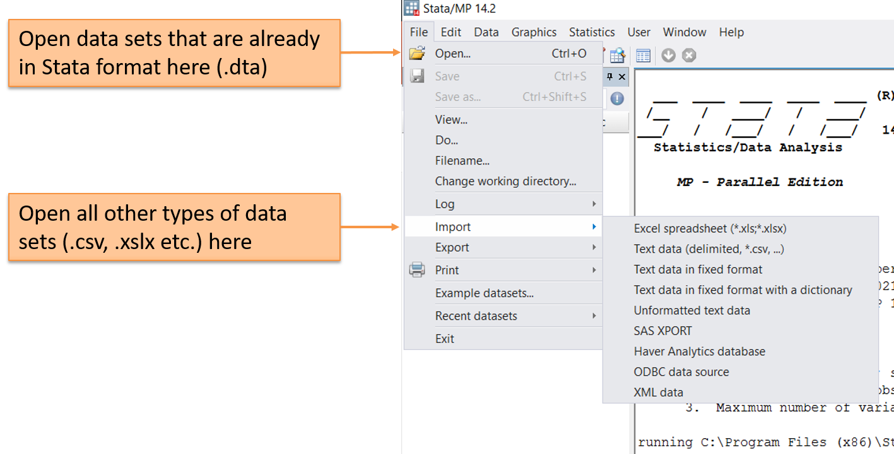
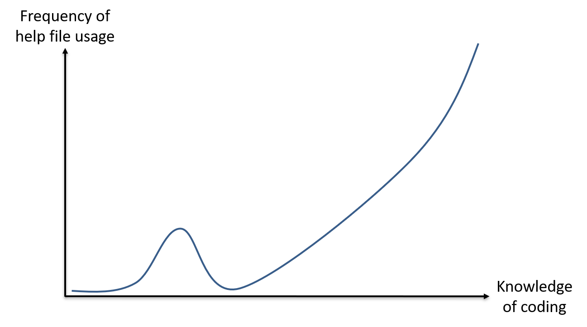
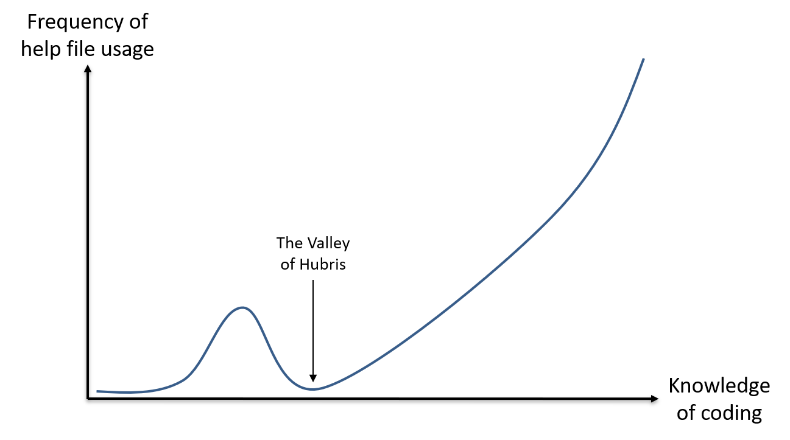
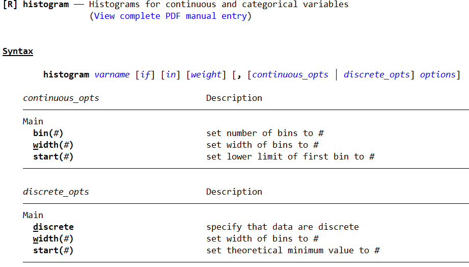
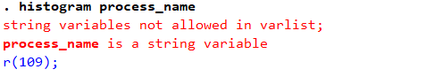
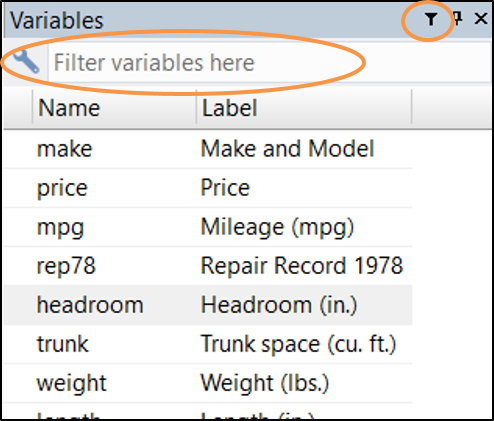

Introduction to Stata
Luíza Andrade and Sushmita Samaddar
The main reasons to use Stata
- In Excel you make changes directly to the data and save new versions of the data set
- In Stata you make changes to the instructions on how to get from the raw data to the final analysis and save new versions of the instructions
- Since Stata is a more statistics-oriented software, processing the data to create analytical products can be a lot easier
The main reasons to use Stata
Powerful tool with many capabilities:
- Descriptive statistics
- Inference statistics
- Complex data analysis
The main reasons to use Stata
Powerful tool with many capabilities:
- Descriptive statistics
- Inference statistics
- Complex data analysis
But it’s also good for beginner programmers:
- User friendly interface
- Relatively easy programming language that can be learned while you’re using the software
The Stata interface

How to tell Stata what to do
- Drop-down menus: An easy place to start but quickly becomes inefficient
- Write code in the command window: Faster than menus but require that you are familiar with the command
- Write code in a do-file: The only feasible way to run long instructions
Opening a data set

Opening a data set
Exercise: Load the dataset contract_clean.dta into Stata
1. Open Stata
2. Click on File > Open...
3. Navigate to DataWork > Data > Final
4. Select the file called contract_clean.dta
5. Click Open
Opening a data set
1. When you use the menus, Stata prints the code for that action in the results window. Highlight, right-click, and copy the code.
2. Paste the code in the command window.
3. Replace contract_clean with item_clean.
4. Hit Enter.
What happened?
Opening a data set
1. Open the do-file editor by typing doedit in the command window or through the shortcut icon on the top ribbon
2. Paste the code in the do-file
3. Replace contract_clean with process_clean
4. Press CTRL + D
5. Go back to the Stata console
What happened?
Opening a data set
- You have just used all the three ways that can be used to interact with Stata
- Using the point-and-click method through Stata’s user interface may seem the easiest way to interact with it
- However, when we use this method, we are “cooking a meal”, not “writing a recipe”
- Our preferred way to interact with Stata, the one we will focus on during this training, are do-files
- Do-files are the last method you just tried
- We prefer them over the over methods because they allow us to re-do every step we have taken in our work and re-create all its outputs
Using a do-file
Exercise: to understand how useful and easy to use do-files can be do the following:
1. Open the do-file in DataWork > Code > Example do-file.do by going to the do-file editor, then clicking Open and navigating to this file
2. Now press CTRL + D or click in the Execute button at the right corner of the buttons ribbon in the do-file editor
You will see that Stata will follow all the instructions in the do-file, including create and export some tables and graphs. This will allow anyone to re-use this code to do similar tasks in the future, as well as make small changes to the outputs.
Code syntax
- The do-file you have just opened is giving instructions to Stata using code
- Writing code is like speaking a language (such as English, Croatian, etc.)
- One needs to speak to Stata in the language it understands
- Don’t worry if you don’t understand everything in this do-file: the purpose of this course is to teach you how to speak this languages well enough to keep using it in the future
Code syntax
- Computers are not as intelligent as humans, so we need to be very precise in how we communicate with them, as they are unable to guess or to infer what we were trying to say
- This means that a single character out of place will make your instructions completely indecipherable for a computer
- Just like a human language, computer languages have a syntax that makes sentences correct
- The equivalent of a sentence in computer language is a line of code
- In the next few slides, we will see an example of the most simple sentence when can use in Stata
Browsing a data set
You can view the data that is open in Stata by typing browse in a new line of the do-file, then running it by pressing CTRL + D or the Execute shortcut
Exercise: use the browse command to view the data set that we opened earlier.
- Note that the content of different columns is in different colors
- Each column in this data set is called a
variable - Each row in this data set is called an
observation - We will use these expressions interchangeably from now on
Exploring a data set
Exercise: explore the data set in memory by using the command describe
Exploring a data set
Exercise: explore the data set in memory by using the command describe
- Note that this command has printed information in your console
- The first part, that is preceded by a
., is the command you entered - The second part is the output of this command
- Read the command’s output and compare it to the data set that you have open
- What are the values shown in the column
storage typefor columns with different colors?
Types of variables
Stata can store information in two formats:
- String (text): values are red when browsing
- Numeric (number): values are black or blue when browsing
Types of variables
- Numbers can be stored as text, but text cannot be stored as number
- It is not possible to do computations on numbers stored as text
- Categorical variables are stored as numeric variables with value labels
- Dates and times are stored as numbers, but can be shown in different formats
The Stata interface - Review window
The Stata interface - Review window
- The review window provides records your conversation with Stata
- It is a convenient way to bring back your previous commands and modify it to do something new
- Double click on a command you want to use again and it will appear in your command window
- You can also click in command window and select the commands in the result window by using the
PageUpandPageDownbuttons in your keyboard - If a command is red in the review window, it means it did not run because of an error
Code syntax
- Note that all the content of your conversation with Stata so far consists of lines with a single verbs
- These are what we call commands
- Commands are the equivalent of verbs in the Stata language
- These verbs are pre-defined, and you need to use each of them in the correct way for Stata to understand you
Code syntax
- When you are not sure how to use a command, you can look for help
- To look for help, we use the
helpcommand - To see how it works, type
help codebookin the command window and then pressENTER
Help files

Help files
- At the top of the help file, you will find a very short description of what the command does
- Under syntax, you will how to use the command correctly
- Everything inside square bracket (
[]) is not required - Whenever
varlistis shown in a help file, it means the command takes a list of variable names as a complement
- Everything inside square bracket (
Help file usage and coding knowledge
Help file usage and coding knowledge

Help file usage and coding knowledge

Exploring a data set
Exercise:
- Type
codebookin the command window and pressENTER - Now type
codebook, compact - Now type
codebook nr_participants process_type bid_submission_date - How does the output of the command look for columns with different “storage types”?
Exploring a data set
There are two ways to find the information you are looking for in a dataset:
1. You can use the search bar in the variable window and type an expression that would be contained in these variables
2. You can use the command lookfor and type lookfor followed by the same expression either in a do-file or in the console
Exploring a data set
Exercise: use the command lookfor to find all the variables in the data set that contain the word “process” in their names or descriptions.
Exploring a data set
Exercise: use the command lookfor to find all the variables in the data set that contain the word “process” in their names or descriptions.
. lookfor process
storage display value
variable name type format label variable label
─────────────────────────────────────────────────────────────────────────────────────────────────────────────────────────────────────────
process_name str1013 %1013s Process Name
process_value float %20.0fc Process Value
process_type long %10.0g process_type
Processing Type
process_id long %290.0g oi Process Tag
Exploring a data set
Exercise: use the command lookfor to find all the variables in the data set that contain the word “process” in their names or descriptions.
. lookfor process
storage display value
variable name type format label variable label
─────────────────────────────────────────────────────────────────────────────────────────────────────────────────────────────────────────
process_name str1013 %1013s Process Name
process_value float %20.0fc Process Value
process_type long %10.0g process_type
Processing Type
process_id long %290.0g oi Process Tag
Note that the second column in the output is telling use which variables contain numbers and which contain text.
Exploring a data set
Histograms are a common way to display the distribution of a variable. In the next exercise, we will use them to explore the process-related variables.
Exercise:
1. Type help histogram to see the syntax for the comand histogram
2. Create a histogram for the variable process_value
3. Create a histogram for the variable process_type
4. Create a histogram for the variable process_name
Exploring a data set
Exercise:
1. Type help histogram to see the syntax for the comand histogram
help histogram
Exploring a data set
Exercise:
2. Create a histogram for the variable process_value
histogram process_value
Exploring a data set
Exercise:
3. Create a histogram for the variable process_type
histogram process_type
Exploring a data set
Exercise:
3. Create a histogram for the variable process_type
histogram process_type
What option makes this command easier to use with categorical variables? Look at the help file to find out.
Exploring a data set
Exercise:
3. Create a histogram for the variable process_type
histogram process_type, discrete
Exploring a data set
Exercise:
4. Create a histogram for the variable process_name

Exploring a data set
Exercise:
4. Create a histogram for the variable process_name
What is happening here? Why is it happening?
Error messages
- When there is an error in how you used a command, Stata will print a message in red
- This message explains what is wrong with your “sentence”
- You can always Google the error if you can not understand it
- Some commands can only be used with certain types of variables
- In this case, we are trying to analyze text as if it were a number
The Stata interface - Variable window

- The variable window lists all the variables in the data set that is currently open
- You can use the search bar to look for variables based on their names and labels
- Clicking on a variable will show some information about it on the Properties window
- If you click in the variable
process_name, you will see that it contains text rather than numbers
Saving a do-file
For us to be able to re-do the same tasks we have done today next time we work with Stata, we need to save our instructions
Exercise: on the do-file editor, click on the Save shortcut on the top ribbon. Save the do-file as DataWork > Code > Lecture notes > Intro to Stata.do
Recap
We have learned
- How the Stata interface is organized
- Three different ways to interact with Stata
- How to open and explore a data set in Stata
- How to find help
- How data can be stored in different formats